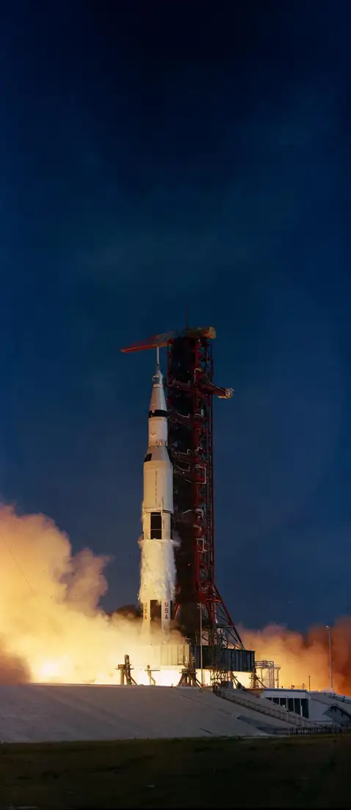

S69-34882
Apkalpe pirms lidojuma
Apollo 11 astronauti atpūšas apmācību laikā.

Virtuālā izstāde / 1969. gada jūlijs
Apollo 11 misija astoņās NASA arhīva fotogrāfijās, sākot ar Saturn V startu un noslēdzot ar skatu uz Zemi atpakaļceļā.
Skatīt kolekcijuPar izstādi
Apollo 11 startēja 1969. gada 16. jūlijā. Četras dienas vēlāk Nīls Ārmstrongs un Bazs Oldrins ar moduli Eagle nolaidās Miera jūrā, kamēr Maikls Kolinss palika Mēness orbītā komandmodulī Columbia. Apkalpe atgriezās uz Zemes 24. jūlijā.
Izstādes mērķis ir parādīt misijas norisi caur tās fotogrāfijām. Tajās redzama gan apkalpes sagatavošanās, gan tas, ko astronauti ieraudzīja no moduļa loga un uz Mēness virsmas.
NASA arhīvs · 8 kadri
S69-34882
Apollo 11 astronauti atpūšas apmācību laikā.

S69-39525
Raķete ar Apollo 11 apkalpi paceļas 1969. gada 16. jūlijā.

AS11-44-6550
Skats no Mēness orbītas pirms nosēšanās.

AS11-37-5454
Miera jūra neilgi pēc moduļa Eagle nosēšanās.

AS11-40-5880
Oldrins nofotografēja savu zābaku un tā nospiedumu Mēness augsnē.
AS11-40-5903
Šo Oldrina portretu uzņēma misijas komandieris Nīls Ārmstrongs.

AS11-44-6642
Moduļa Eagle pacelšanās pakāpe tuvojas Columbia.

AS11-44-6689
Apkalpe nofotografēja Zemi ceļā no Mēness uz mājām.
Attēlu karuselis

1 / 5
Raķete ar Apollo 11 apkalpi paceļas 1969. gada 16. jūlijā.